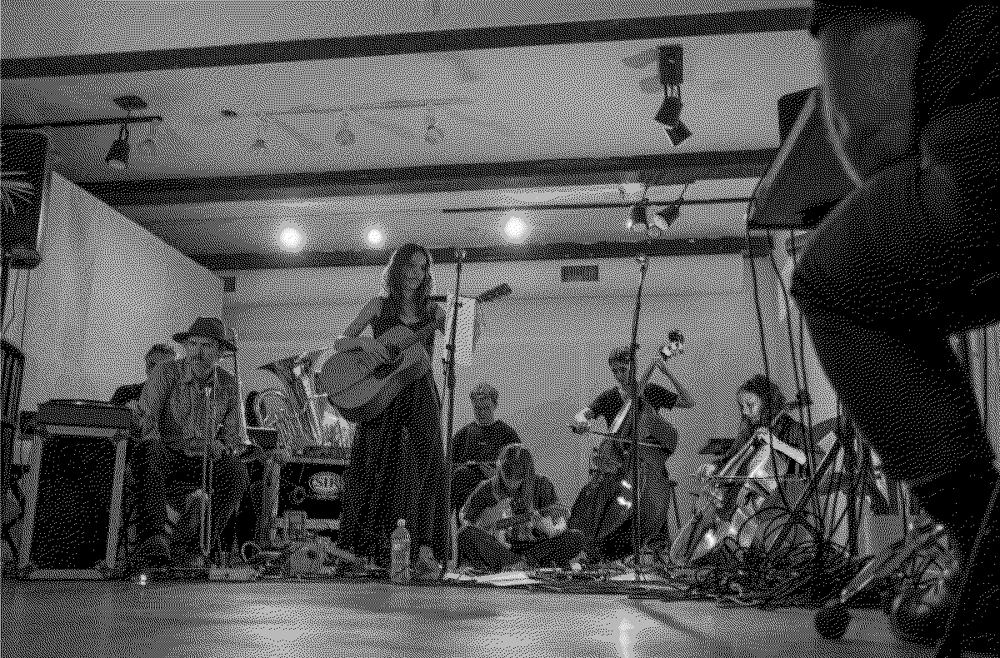
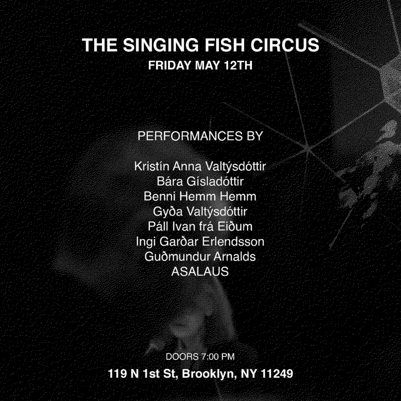
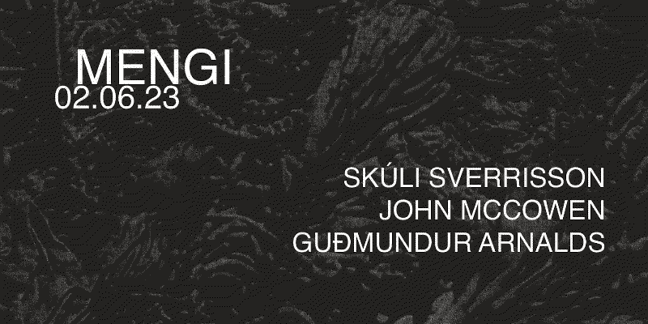

MENGI New York and trio show with Skúli Sverrisson & John McCowen
230519
The last couple of weeks have been a hazy blur full of wonder and excitement. I finally finished my semester for university and have been getting around to those projects that have been on hiatus during all the school stress. Most notable of which is putting the finishing touches and starting the process of mixing for the latest russian.girls album which I have been co-producing a lot on and get the honor to mix. In the middle of this was a also a trip to New York where we exported MENGI to a stage in Brooklyn through the Taste of Iceland initiative, a fun night where 9 sets by a crowd of Icelandic musicians blended with each other. I played a set with Ásta Fanney Sigurðardóttir but also took a small part in the sets of Benni Hemm, Kristín Anna Valtýsdóttir and Gyða Valtýsdóttir - fun times indeed.

I am also very excited to play a show with two of my close friends and personal heroes in a couple of weeks, Skúli Sverrisson and John McCowen. The event for this special trio just went up and I hope people will buy [tickets]! Their music in some sense so monolithic due to their seperate unique styles that are somehow completely their own. If anyone reading this hasn't heard their work I strongly suggest you check it out.
